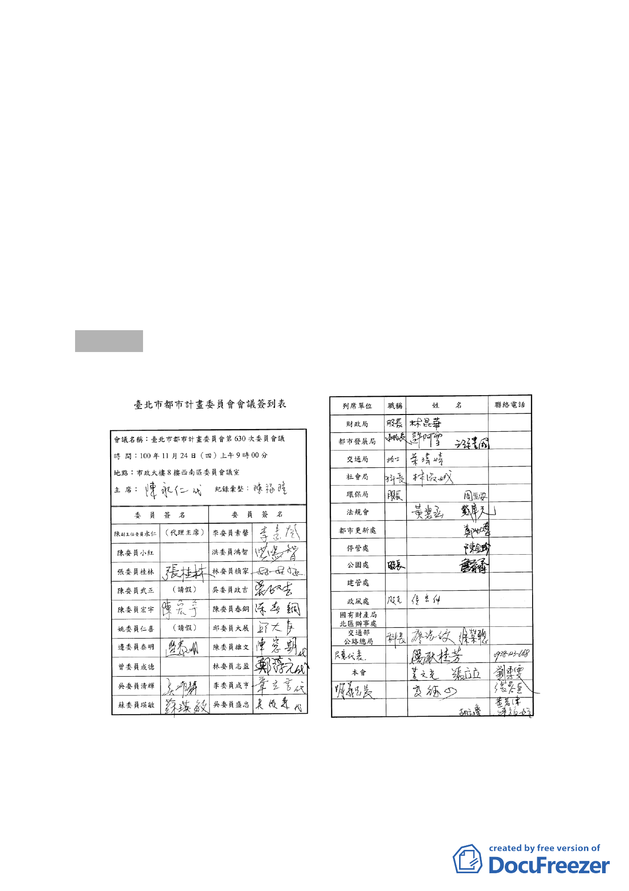

（二） 本變更案若無法依「修訂臺北市老舊中低層建築社區
辦理都市更新擴大協助專案計畫」規定時程申請建照
及開工，則其回復原都市計畫之處理方式，請將市府
100年9月20日公告之申請人「承諾與實踐」內容，載
明於計畫書第15頁拾壹、其他項內；並請確實載明本
申請人與未來辦理都市更新事業計畫實施者之關係及
其權利義務。
（三） 本計畫書第11頁捌之二係有關土地使用管制之規定，
請刪除（五）之1.建築設計內容（與第14頁四之（一）
重覆），並刪除2.「承諾與實踐」（已於前項第15頁載
明）。
肆、散會（11：40）
- 12 -